Haskell03 - Context
Functor
problem
This solution means that you’d have to rewrite a special version of every existing function you want to use in a Maybe! This greatly limits the usefulness of tools such as Maybe. It turns out Haskell has a type class that solves this problem, called Functor.
definition
Maybe is a member of the Functor type class. The Functor type class requires only one definition: fmap.
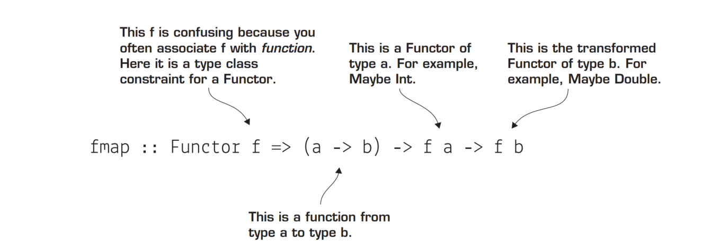
_fmap provides an adapter_, Notice that we’re using <$>, which is a synonym for fmap (except it’s a binary operator rather than a function._This ability to transform the types of values inside a Maybe is the true power of the Functor type class._
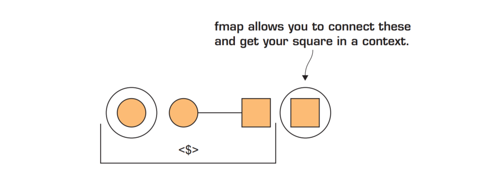
Though fmap is the official function name, in practice the binary operator <$> is used much more frequently
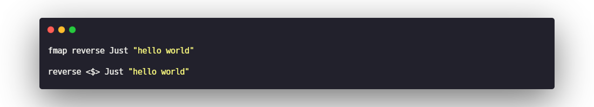
Applicative
_the Applicative type class allows you to use functions that are inside a context, such as Maybe or IO, Functor is a superclass of Applicative._
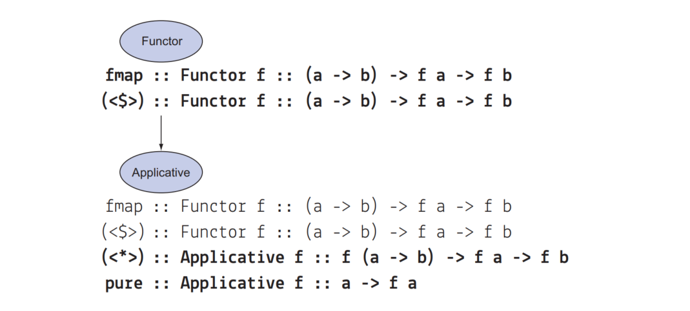
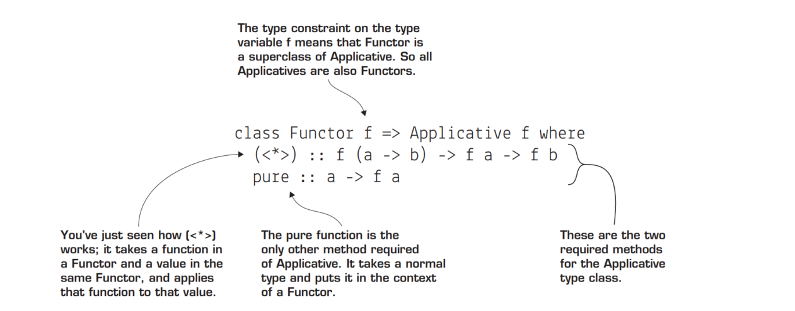
The pure method
The pure method is a useful helper function for taking an ordinary value(also function) or function and putting it into a context.
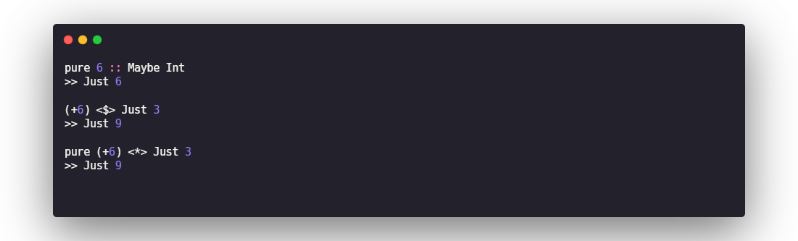
<*>
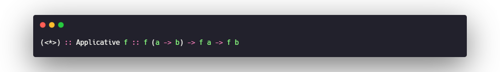
Containers vs. contexts
- Parameterized types that represent a container are types that represent a data structure.
- When a type is a context, extra information is implied about the type, beyond its structure.
List as a context
The List type is both a container and a context.List as a container is easy to understand. List is basically a chain of buckets of whatever type of data you want to hold. But List is a member of Applicative,so there must be a way to view List as a context.
_List as a context is that it describes nondeterministic computation._
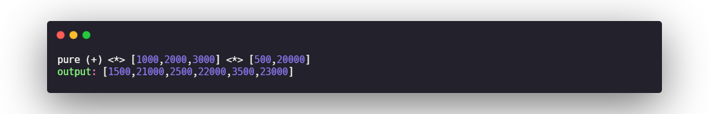
when you add values in the context of a list,you’re adding together all possible values from the two contexts.
- A list as a container is a sequence of values that can hold any type. Each item in the list points to the next one or to the empty list.
- A list as a context represents a set of possibilities. Think of a list as a context as being a single variable that can contain many possible values.
MONAD
The Monad type class
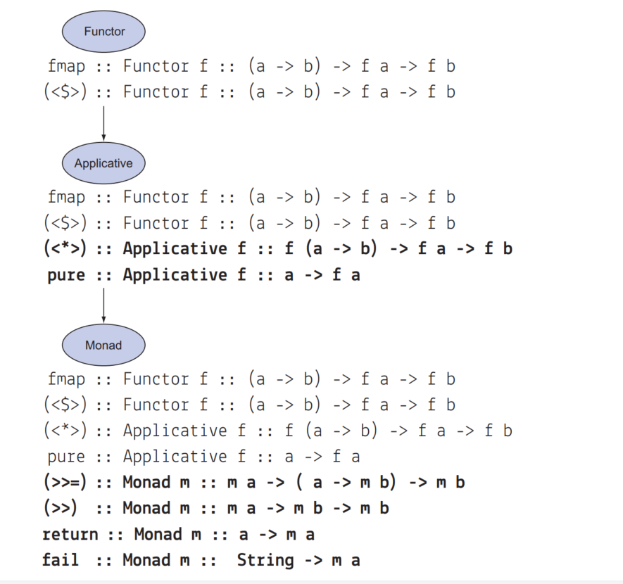
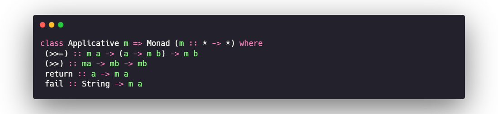
The bind operator: >>=
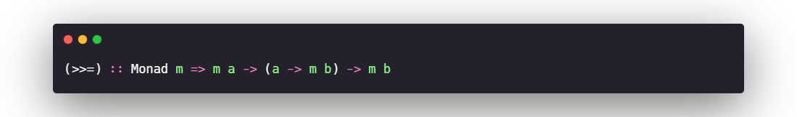
_As you can see, >>= allows you to chain together a function of a type (a -> m b)_
the list Monad
when you assign your list to a variable using <-, you get to treat it as though it were a single value. The rest of this code looks like it’s operating on one candidate, and yet the final result is the same as applying your logic to every candidate in a list.
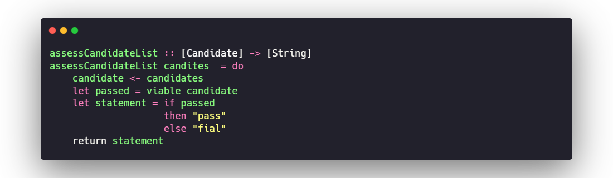
Building lists with the list monad
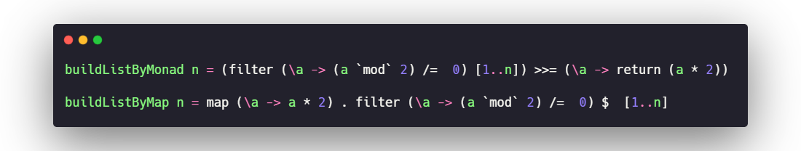
The guard function
Again you could use filter, but when working with monads, you’d like to be able to reason about a value outside its context. In Control.Monad, a function called guard allows you to filter your values in a list. You have to import Control.Monad to use guard.
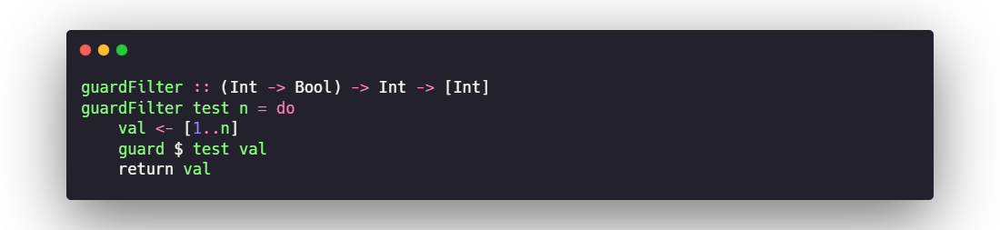
list comprehensions
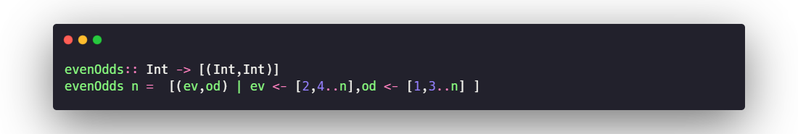